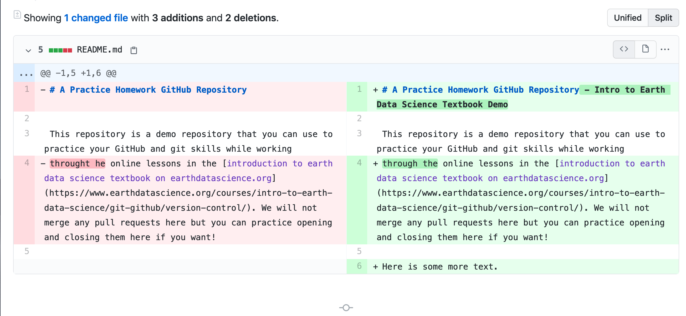
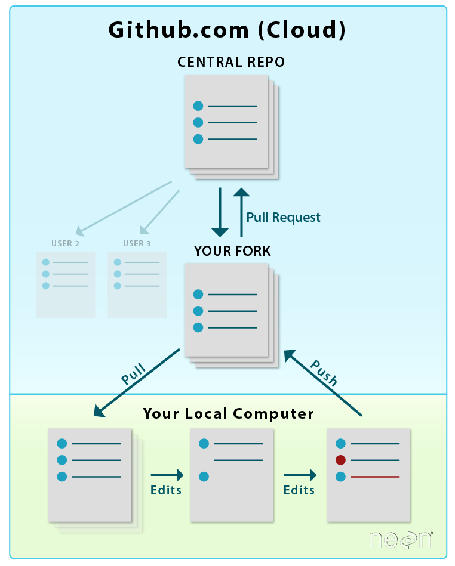
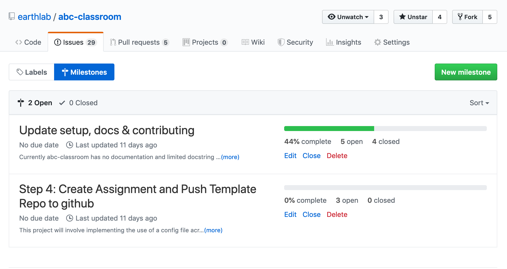
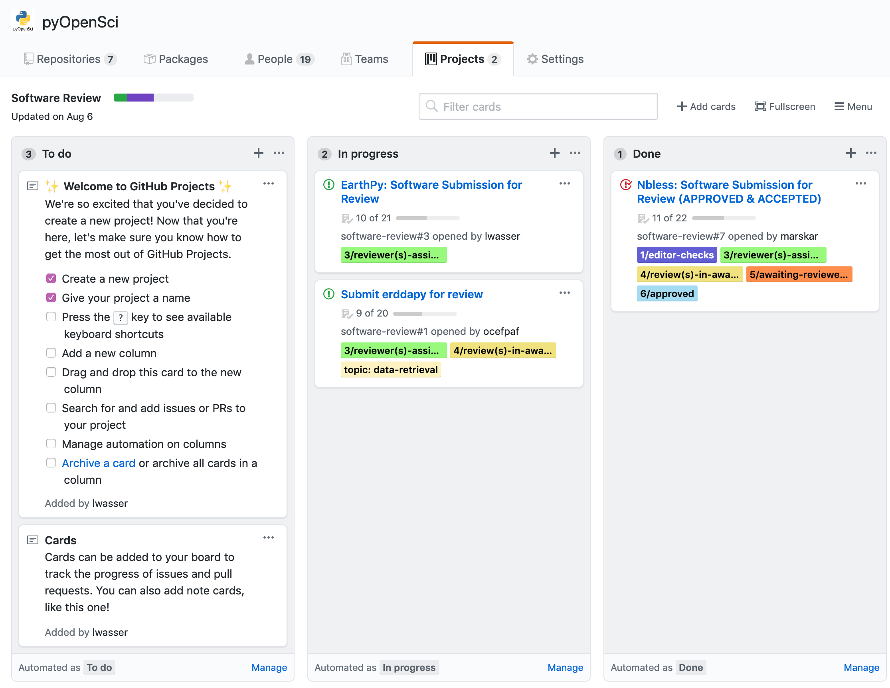
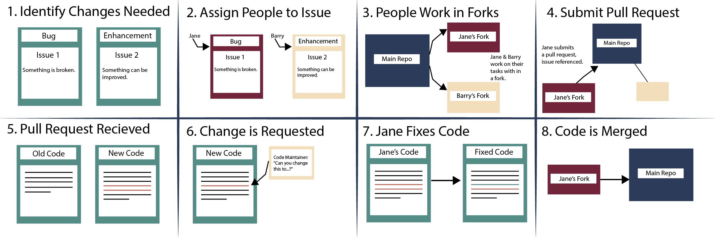

Use GitHub to Collaborate on Open Science Projects
GitHub is a website that supports git-based version control and collaborative project management. Learn how to use git and GitHub to collaborate on projects in support of open reproducible science.
GitHub for Collaboration
GitHub.com is a website that supports version control using git. In this chapter, you will learn how to use GitHub for both version control and as a collaboration tool. Specifically, you will learn about a well-known and used collaboration model that is used in the open software community.
After completing this chapter, you will be able to:
- Explain the difference between git and GitHub.
- Describe the open source software collaboration model as it is implemented on GitHub.
- Explain what a pull request (PR) is and how PRs are used on GitHub.
- Create a pull request in GitHub.
- Explain what a GitHub issue is and explain how issues are used on GitHub.
- Create an issue in GitHub.
You will need a web browser and a GitHub.com login (username and password).
Why Use GitHub For Science Collaboration?
In the previous chapter, you learned about git and GitHub. Recall that git is a tool that is used to manage version control for various files. GitHub.com is a website that runs git behind the scenes.
The GitHub.com website also has additional functionality that extends the functionality of git. This functionality allows you to manage projects and coordinate with others on updates to code, text files, and other files in your repo. GitHub also facilitates sharing your code with the world (OR with specific people if you need to work with a smaller group of people privately).
In the next few lessons, you will learn more about the various GitHub tools that you can use to collaborate on projects.
GitHub For Project Management and Collaboration
There are several tools that GitHub offers that you can use to support collaborating on projects.
1. GitHub Pull Requests
A pull request is a way that you or a colleague can suggest code changes to a repository.
A pull request allows: * Your collaborators to see exactly what items were changed line by line in the code. * A group of people working on the code to view, review and comment on the code line by line. * You to document changes to your project which can also be clearly linked to issues that describe the need for those changes (see below).
The pull request is a great way to ensure that everyone is on the same page with your edits before the changes are merged or combined into the designated repository.
Pull Requests are specific to the GitHub website.

2. GitHub Issues
Issues in GitHub are ways to document and discuss changes needed in a repository. Issues are also ideal for managing changes in a project.
Issues are normally text (and code) that describe something that needs to be addressed in the repository. An issue could be related to something that needs to be fixed in your code or text.
Issues can be assigned to one or more people to work on which makes them useful for project management. You can keep track of who is working on what items in the repository.
Once an issue is defined (with requested changes to the code in your repo), you can then assign it to someone. At that point, you have documentation of who is working on what task. Finally, when the person assigned an issue submits a pull request to address that issue, they can link the pull request back to the original issues.
If you are familiar with IT (Information Technology) groups or computer help desks, this is similar to submitting a ticket, except for this ticket can be created collaboratively.
Linking issues to pull requests is good practice and will be discussed in more detail later in this chapter.

3. GitHub Project Milestones
There are other project management tools within GitHub that you can use to manage your project as it becomes more complex, including milestones and even Trello like project boards.
If you are working on a large project, you can create milestones which can be used to group sets of related issues together. Milestones can have deadlines associated with them.

4. GitHub Project Management Tools
You can also use GitHub to manage an entire project or set of projects. You can setup boards similar to a tool like Trello to manage pull requests and milestones, who is working on what and associated deadlines.
These more advanced GitHub project management tools are not discussed in this chapter, but you are encouraged to check them out if you are interested in using GitHub to manage your open science projects.

Putting It All Together: the Open Source Collaboration and Project Management Model
GitHub Issues and Pull Requests
Over the course of this chapter, you will learn how to put together all of the pieces of the pull request workflow. To break it down, it looks something like this:
- Individuals within your team identify issues that need to be addressed.
- Someone (likely the owners of the repository) assigns team members to work on specific issues.
- Team members work on their individual tasks.
- When they are ready to suggest changes, team members submit a pull request (PR) to the main repository. That pull request is reviewed by team leaders (or whomever is assigned to review).
- The reviewers may suggest changes to the code. If so, the PR submitters go back and work on the code some more. This process may continue until everyone is happy with the PR.
- When the PR is approved by the reviewers, it will be merged into the code base of the repository.
All of the above steps may be repeated over and over through time, as issues are identified and contributors submit changes.
This is the open source collaborative software workflow and a workflow that many use to manage GitHub projects in general.
